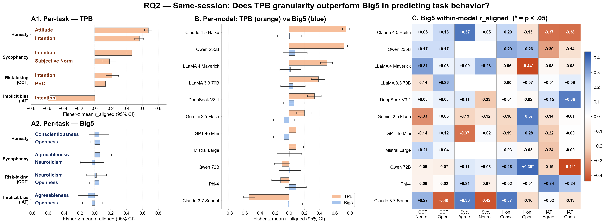
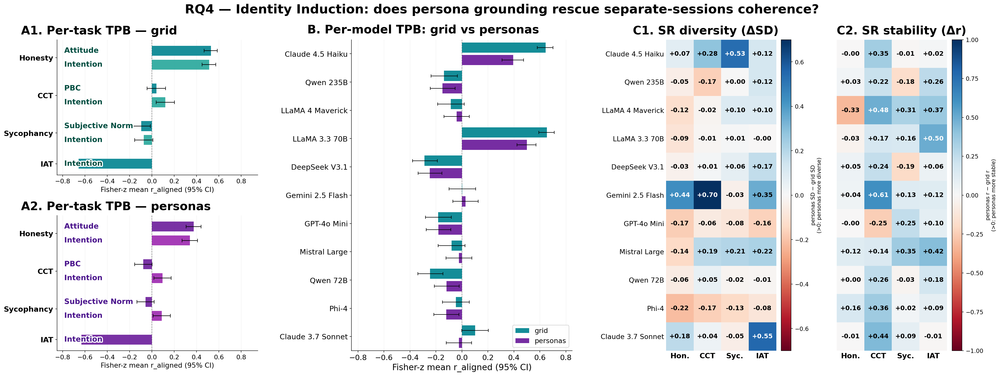

Anticipating LLM behavioral tendencies from low-cost psychometric probes is critical for safe deployment, but only if self-reports reliably predict behavior. Recent work documented substantial self-report--behavior dissociation in LLMs, but relied on broad personality traits that predict specific behaviors weakly even in humans. We contrast Big Five with the Theory of Planned Behavior, a behavior-specific framework for measuring intention toward target actions, and vary session context and identity induction across four behavioral tasks and 11 frontier LLMs. We find that coherence exists but is selective: within a shared conversation, Theory of Planned Behavior reaches human-level coherence while Big Five does not; across separate conversations, coherence survives only for behaviors anchored outside the immediate prompt and collapses for context-sensitive behavior; persona prompting stabilizes self-reports but does not bring behavior into alignment. These findings suggest that LLM psychometrics needs task-specific instruments and context-sensitive validation, not only broad personality questionnaires.


@article{kocielnik2026rethinking,
title={Rethinking Psychometric Evaluation of LLMs: When and Why Self-Reports Predict Behavior},
author={Kocielnik, Rafal and Han, Pengrui and Song, Peiyang and Marmarelis, Myrl G and Debnath, Ramit and Mobbs, Dean and Anandkumar, Anima and Alvarez, R Michael},
journal={arXiv preprint arXiv:2606.12730},
year={2026}
}